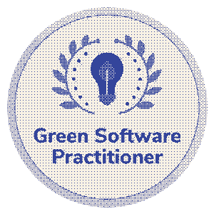
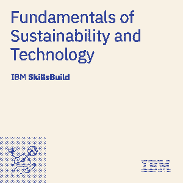
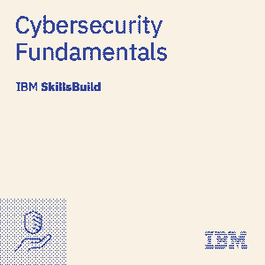
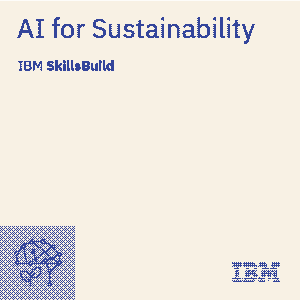

¿Realmente necesitamos usar PHP?
Una vulnerabilidad crítica en PHP dejó al descubierto algo más incómodo: quizá tu web no necesita back-end, ni JavaScript, ni nada que actualizar.
LeerConvierto ideas de negocio en soluciones digitales escalables, robustas y eficientes. Llevo aprendiendo y desarrollando software desde hace 8 años. Actualmente, curso el último año de Ingeniería Informática en la Universidad de Alicante, con mención en Ingeniería del Software.
En estos tiempos de constante cambio gracias a la inteligencia artificial, mi mayor interés es aprender a hacer software seguro, eficiente y sostenible.
Echa un vistazo a las últimas publicaciones de mi blog:
Una vulnerabilidad crítica en PHP dejó al descubierto algo más incómodo: quizá tu web no necesita back-end, ni JavaScript, ni nada que actualizar.
Leer
Durante veinte años escribimos software para otros. La próxima década será para nosotros: herramientas pequeñas, datos en casa y programas que se pueden leer.
Leer


